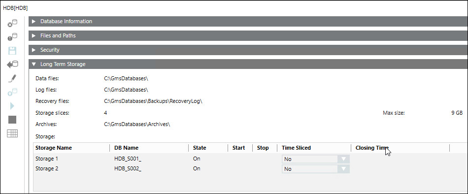

Create and Configure a Project using SMC
In SMC, you must configure two Long Term Storages (LTS) and link it to the project that you create.
- Create database with two Long Term Storages in SMC.
a. Select History Infrastructure.
b. Click Scan Local.
c. Select the Required SQL server and click Link .
.
d. Click Add to create the HDB.
to create the HDB.
e. In the Long Term storage expander, click Add Storage two times to create two long term storages.
f. Select the Start check box for the two storages.
g. Click Save.
NOTE: Every storage will have two storage slices. 
- Create a project with required extensions WSI, Advanced Reporting, D3 Visualization, Modbus. Do one of the following:
- Click Create Project from Template
 to create a project using the template project settings.
to create a project using the template project settings. - Click Create Project to create project and configure the project manually.
- Link the database with two LTS to the project.
- The database is linked to the project containing all required extensions of Powermanager.